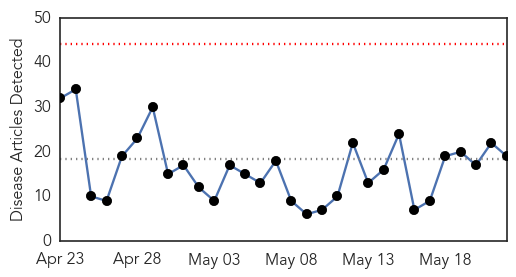
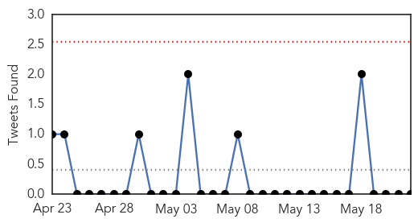
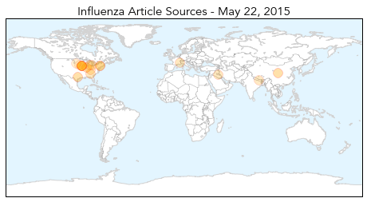
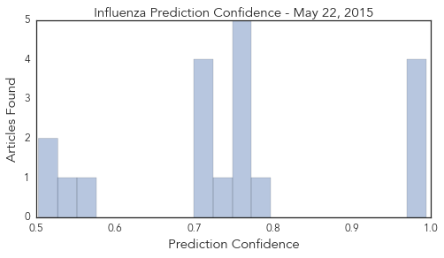

Influenza
30-Day Web Trend
0 alerts, 0 warnings

30-Day Twitter Trend
3 alerts, 0 warnings

Article Locations
Article Confidences
Top Articles:
- 0.994
- How to Keep Your Pet Safe from Canine Flu
- 0.992
- Vaccines developed for H5N1, H7N9 avian influenza strains
- 0.988
- New canine flu detected in several more states
- 0.987
- Dog flu now in 12 states
- 0.777
- Canine flu infecting thousands of dogs in Midwest discovered in Georgia
- 0.751
- May 21, 2015 Archives
- 0.751
- May 21, 2015 Archives
- 0.751
- May 21, 2015 Archives
- 0.751
- May 21, 2015 Archives
- 0.751
- May 21, 2015 Archives
- 0.738
- Avian influenza continues to spread in Iowa
- 0.720
- Case of canine flu confirmed in Macomb County
- 0.720
- Case of canine flu confirmed in Macomb County
- 0.712
- Farmers in the Midwest Are Incinerating Millions of Chickens
- 0.701
- Oxfam training community health volunteers after Nepal Earthquake
- 0.552
- Avian Flu Outbreak Takes Poultry Producers Into Uncharted Territory
- 0.532
- Yankton Press & Dakotan: Community
- 0.524
- Egg prices headed up as bird flu scrambles supply
- 0.503
- Bird flu backlog should be cleared in a week
Top Tweets:
-
No tweets found for May 22, 2015
Ebola
30-Day Web Trend
0 alerts, 1 warnings

30-Day Twitter Trend
0 alerts, 0 warnings

Article Locations

Article Confidences

Top Articles:
- 1.000
- Liberia is Ebola-free—raising hopes for the region
- 0.999
- Guinea reports 27 new Ebola cases
- 0.999
- Guinea reports 27 new Ebola cases
- 0.999
- Sierra Leone makes progress in recovery from ebola crisis
- 0.999
- The Ebola outbreak highlights shortcomings in disease surveillance and response – and where we can do better
- 0.999
- Officials optimistic on fight against Ebola
- 0.998
- Learning the Lessons of Ebola: Why the Spread of Disease is About More Than Just Health
- 0.994
- Sierra Leone:- Frontline health workers were sidelined in $3.3bn fight against Ebola
- 0.993
- Irish medics return from Ebola mission in Sierra Leone
- 0.992
- Was the Ebola outbreak the beginning of the end for the World Health Organization?
- 0.992
- UN health agency responds to #Ebola spike by deploying team on border of #Guinea and #GuineaBissau
- 0.987
- Handling of Dead Bodies Spreading Ebola in Guinea
- 0.983
- Ebola in Liberia: Frightened patients infected their carers
- 0.980
- Steinhardt's Carlos Chirinos Helps Launch Song Contest To Help End Ebola
- 0.978
- UK artificial intelligence healthcare pioneer helps fight against Ebola and other deadly viruses
- 0.962
- UN to Eliminate Dread Diseases
- 0.952
- Japan Disburses 720,000 JPY worth of PPEs to Govt.
- 0.943
- WHO Calls For $100 Million Emergency Fund, Doctor 'SWAT Team' . News
- 0.928
- Humanity wins some
- 0.919
- Welcome to the Expotimes News
- 0.908
- West Africa Faces a Long Road to Recovery After the Ebola Crisis
- 0.870
- Morbidity and Mortality Weekly Report (MMWR): Progress Toward Polio Eradication — Worldwide, 2014–2015 - World
- 0.857
- Maple Valley woman shares perspective on Ebola outbreak
- 0.856
- Sierra Leone News: Vice President Foh Launches National HIV
- 0.835
- AS AFRICAN HEALTH MINISTERS CALL FOR THE ESTABLISHMENT OF AN AFRICAN CENTER FOR DISEASE CONTROL, SIERRA LEONES’S HEALTH AND SANITATION MINISTER APPOINTED CHAIR
- 0.820
- Rochester Business Journal New York business news and information
- 0.818
- Former MP George Galloway sent package 'infected with Ebola'
- 0.795
- China Praised for Helping Sierra Leone Fight Against Ebola
- 0.764
- ACC DIALOGUES WITH CONFERENCE OF PRINCIPALS ON ILLEGAL CHARGES IN SCHOOLS
- 0.756
- GUMA BRIEFS COMMITTEE ON WATER RESOURCES
- 0.739
- WHO Regional Director calls for respect and safety of health care workers and facilities - World
- 0.722
- UNDP Supports Vital Payments to Ebola Emergency Response Workers
- 0.670
- University researcher developing rapid Ebola diagnostic test
- 0.651
- Brazen attacks on health workers on rise, human rights groups say
- 0.620
- Insuring governments against disease outbreaks
- 0.607
- Witness Tenders Bill of Laden on Timber Matter
- 0.599
- Cameroon’s Role in Difficult Times Acknowledged
- 0.594
- Arrestan al sospechoso de cuádruple asesinato en Washington D.C.
- 0.590
- Irish troops fighting spread of Ebola in Sierra Leone arrive home after four-month mission
- 0.564
- Liberia Ponders Site for National Ebola Monument
- 0.513
- Military medicine institutions globally will face severe challenges: Ryacudu
Top Tweets:
- 0.909
- When disasters like Ebola hit the world needs the World Health Organization ... - Vox http://t.co/8Xv66PxYc0 ebola EVD
- 0.825
- Recent Ebola outbreak has highlighted the importance of strong capacities to rapidly detect respond to prevent intl public health threats
- 0.701
- Defence Forces medics fly home from Ebola-ravaged Sierra Leone - thejournal.ie http://t.co/Qy36l46cZC ebola EVD
- 0.678
- Guinea reports 27 new Ebola cases after previous lull 1 cluster near Guinea ... - Minneapolis Sta... http://t.co/gXNEexMq8M ebola EVD
- 0.654
- Ebola : en Guinée et en SierraLeone le virus n'a pas dit son dernier mot http://t.co/dRhwSNasUm via
- 0.602
- Ebola Cases Quadruple in Guinea and Sierra Leone as Rainy Season Sets In:... http://t.co/8waSBUStOj
- 0.588
- Guinea reports spike in Ebola cases with 27 sick police say families ... - U.S. News & World Report http://t.co/pOzS9qA3xs ebola EVD
- 0.565
- SierraLeone berates Ebola quarantine escapees as cases surge https://t.co/gT44AdI9CG via
- 0.549
- Ebola-free Liberia cleared to host football games again - Washington Times http://t.co/lPVr3F2bt6 ebola EVD
- 0.548
- Finally drug for Ebola in sight - Times of India http://t.co/Te7Tj02mqZ ebola EVD
- 0.510
- Ebola vaccine trial hits Hohoe; GH¢200 phones for participants - Starr 103.5 FM http://t.co/FpcC5WWtHm ebola EVD